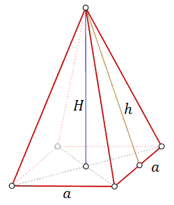
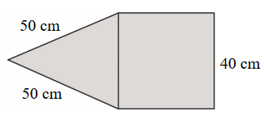
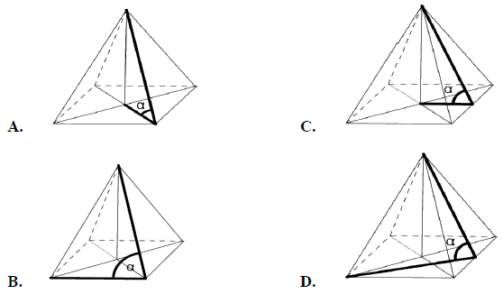
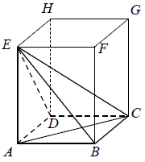
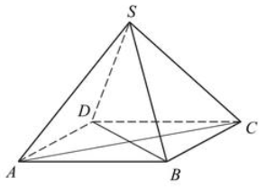
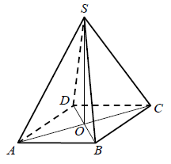
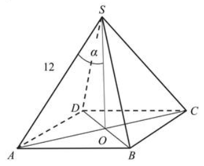

Ostrosłup prawidłowy czworokątny
Ostrosłup prawidłowy czworokątny - to taki ostrosłup, który ma w podstawie czworokąt
foremny, czyli kwadrat. Wierzchołek takiego ostrosłupa leży dokładnie nad środkiem podstawy. W
związku z tym ostrosłup prawidłowy czworokątny ma cztery identyczne ściany boczne, które są
trójkątami równoramiennymi.
Spodek wysokości ostrosłupa leży na przecięciu przekątnych kwadratu w podstawie.

Wzór na pole powierzchni ostrosłupa prawidłowego czworokątnego:
\[P_c=P_p+P_b=a^2+4\cdot \frac{1}{2}ah=a^2+2ah\] gdzie:
\(P_p\) - pole podstawy ostrosłupa
\(P_b\) - suma pól ścian bocznych ostrosłupa
Wzór na objętość ostrosłupa
prawidłowego czworokątnego: \[V=\frac{1}{3}\cdot P_p\cdot H=\frac{1}{3} a^2 H\] gdzie:\(P_p\) - pole podstawy ostrosłupa
\(P_b\) - suma pól ścian bocznych ostrosłupa
\(P_p\) - pole podstawy ostrosłupa
\(H\) - wysokość ostrosłupa
Na rysunku przedstawiono fragment siatki ostrosłupa prawidłowego czworokątnego.

Dokończ zdanie. Wybierz właściwą odpowiedź spośród podanych.
Suma
długości wszystkich krawędzi tego ostrosłupa jest równa A.\( 560 \) cm
B.\( 360 \) cm
C.\( 260 \) cm
D.\( 220 \) cm
B
Kąt \(\alpha \) nachylenia ściany bocznej ostrosłupa prawidłowego czworokątnego do
płaszczyzny podstawy zaznaczony jest na rysunku: 
C
W ostrosłupie prawidłowym czworokątnym krawędź boczna ma długość \(5\) cm, a
krawędź podstawy \(\sqrt{8}\) cm. Wówczas cosinus kąta nachylenia krawędzi bocznej do płaszczyzny
podstawy jest równy:
A.\( \frac{\sqrt{2}}{5} \)
B.\( 0{,}6 \)
C.\( 0{,}4 \)
D.\( \frac{\sqrt{8}}{10} \)
C
Pole podstawy ostrosłupa prawidłowego czworokątnego jest równe \(100\)
cm2, a jego pole powierzchni bocznej jest równe \(260\) cm2. Oblicz objętość
tego ostrosłupa.
\(V=400\)
W ostrosłupie prawidłowym czworokątnym \(ABCDS\) o podstawie \(ABCD\) i wierzchołku
\(S\) trójkąt \(ACS\) jest równoboczny i ma bok długości \(8\). Oblicz sinus kąta nachylenia ściany
bocznej do płaszczyzny podstawy tego ostrosłupa (zobacz rysunek). 
\(\sin \alpha =\frac{\sqrt{42}}{7}\)
W graniastosłupie prawidłowym czworokątnym \(ABCDEFGH\) przekątna \(AC\) podstawy
ma długość \(4\). Kąt \(ACE\) jest równy \(60^\circ\). Oblicz objętość ostrosłupa \(ABCDE\)
przedstawionego na poniższym rysunku. 
\(V=\frac{32\sqrt{3}}{3}\)
Piramida Cheopsa ma kształt ostrosłupa prawidłowego czworokątnego. Każda ściana
boczna jest nachylona do płaszczyzny podstawy ostrosłupa pod kątem \(52^\circ \), a pole powierzchni
ściany bocznej jest równe \(21\ 550 \) m2. Oblicz objętość
piramidy. Wynik zapisz w postaci \(a\cdot 10k\), gdzie \(1\le a\lt 10\) i
\(k\) jest liczbą całkowitą.
\(2{,}61\cdot 10^6\)
Piramida ma kształt ostrosłupa prawidłowego czworokątnego, którego wysokość jest
równa \(6\), a długość krawędzi bocznej jest równa \(2\sqrt{15}\). Oblicz miarę kąta nachylenia
ściany bocznej piramidy do podstawy.
\(60^\circ \)
Podstawą ostrosłupa prawidłowego czworokątnego \(ABCDS\) jest kwadrat \(ABCD\)
(zobacz rysunek). Wszystkie ściany boczne tego ostrosłupa są trójkątami równobocznymi. Miara kąta
\(SAC\) jest równa 
A.\( 60^\circ \)
B.\( 45^\circ \)
C.\( 90^\circ \)
D.\( 75^\circ \)
B
W ostrosłupie prawidłowym czworokątnym objętość jest równa \(32\), zaś krawędź
podstawy jest równa \(4\). Wysokość tego ostrosłupa jest równa:
A.\( \frac{2}{3} \)
B.\( \frac{4}{3} \)
C.\( 2 \)
D.\( 6 \)
D
Drut o długości \(96\) cm wykorzystano w całości na wykonanie szkieletu ostrosłupa
prawidłowego czworokątnego o wszystkich krawędziach równej długości. Zaznacz na rysunku kąt
nachylenia ściany bocznej ostrosłupa do płaszczyzny podstawy i wyznacz cosinus tego kąta.
\(\cos \alpha =\frac{\sqrt{3}}{3}\)
Podstawą ostrosłupa prawidłowego jest kwadrat. Wysokość ściany bocznej tego
ostrosłupa jest równa \( 22 \), a tangens kąta nachylenia ściany bocznej ostrosłupa do płaszczyzny
jego podstawy jest równy \( \frac{4\sqrt{6}}{5} \). Oblicz objętość tego ostrosłupa. 
\(V=\frac{3200\sqrt{6}}{3}\)
Rysunek przedstawia ostrosłup prawidłowy czworokątny \(ABCDS\).  Kątem między krawędzią \(CS\) a
płaszczyzną podstawy tego ostrosłupa jest kąt
A.\( DCS \)
B.\( ACS \)
C.\( OSC \)
D.\( SCB \)
B
W ostrosłupie prawidłowym czworokątnym ściana boczna o polu równym \(10\) jest
nachylona do płaszczyzny podstawy pod kątem \(60^\circ\). Oblicz objętość tego ostrosłupa.
\(V=\frac{20\sqrt{15}}{3}\)
Dany jest ostrosłup prawidłowy czworokątny \(ABCDS\), którego ściany boczne są
trójkątami równobocznymi. Punkty \(G\), \(E\) i \(F\) są odpowiednio środkami odcinków \(AD\),
\(BC\) i \(CS\) (zobacz rysunek).  Kątem między przeciwległymi ścianami bocznymi jest kąt
Kątem między przeciwległymi ścianami bocznymi jest kąt
Kątem między przeciwległymi ścianami bocznymi jest kąt A.\( DFE \)
B.\( GES \)
C.\( ESG \)
D.\( ASC \)
C
W ostrosłupie prawidłowym czworokątnym kąt pomiędzy wysokością ostrosłupa a
wysokością ściany bocznej jest równy \(30^\circ \). Promień okręgu opisanego na podstawie jest równy
\(2\sqrt{2}\). Oblicz sinus kąta nachylenia krawędzi bocznej ostrosłupa do płaszczyzny podstawy.
\(\frac{\sqrt{15}}{5}\)
Dany jest ostrosłup prawidłowy czworokątny, którego wysokość ma długość \(H\) oraz
kąt między krawędzią boczną i płaszczyzną podstawy jest równy \(60^\circ \). Wyznacz wzór na pole
powierzchni bocznej tego ostrosłupa w zależności od wysokości \(H\).
\(\frac{2H^2\sqrt{7}}{3}\)
Podstawą ostrosłupa prawidłowego czworokątnego \(ABCDS\) jest kwadrat \(ABCD\).
Wszystkie ściany boczne tego ostrosłupa są trójkątami równobocznymi. Miara kąta \(ASC\) jest równa
A.\( 45^\circ \)
B.\( 30^\circ \)
C.\( 75^\circ \)
D.\( 90^\circ \)
D
Na rysunku przedstawiono ostrosłup prawidłowy czworokątny \(ABCDS\) o podstawie
\(ABCD\).  Kąt nachylenia
krawędzi bocznej \(SA\) ostrosłupa do płaszczyzny podstawy \(ABCD\) to
Kąt nachylenia
krawędzi bocznej \(SA\) ostrosłupa do płaszczyzny podstawy \(ABCD\) to
Kąt nachylenia
krawędzi bocznej \(SA\) ostrosłupa do płaszczyzny podstawy \(ABCD\) to A.\( \sphericalangle SAO \)
B.\( \sphericalangle SAB \)
C.\( \sphericalangle SOA \)
D.\( \sphericalangle ASB \)
A
Dany jest ostrosłup prawidłowy czworokątny o wysokości \(H=16\). Cosinus kąta
nachylenia krawędzi bocznej do płaszczyzny podstawy tego ostrosłupa jest równy \(\frac{3}{5}\).
Oblicz pole powierzchni bocznej tego ostrosłupa.
Wysokość ostrosłupa prawidłowego czworokątnego jest równa \(8\). Krawędź boczna
jest nachylona do płaszczyzny podstawy pod kątem \(40^\circ \). Oblicz objętość tego ostrosłupa.
\(V=\frac{1024}{3\operatorname{tg}^2 40^\circ }\)
Krawędź podstawy ostrosłupa prawidłowego czworokątnego jest równa \(\sqrt{2}\).
Krawędź boczna jest nachylona do płaszczyzny podstawy pod kątem 6\(0^\circ \). Oblicz objętość tego
ostrosłupa.
\(V=\frac{2\sqrt{3}}{3}\)
Krawędź podstawy ostrosłupa prawidłowego czworokątnego jest równa \(1\), a wysokość
jest równa \(2\). Oblicz pole powierzchni całkowitej tego ostrosłupa.
\(P_c=1+\sqrt{17}\)
Podstawą ostrosłupa prawidłowego czworokątnego \(ABCDS\) jest kwadrat \(ABCD\).
Pole trójkąta równoramiennego \(ACS\) jest równe \(120\) oraz \(|AC| : |AS| = 10 : 13\) . Oblicz
pole powierzchni bocznej tego ostrosłupa.
\(20\sqrt{313}\)
Długość krawędzi podstawy ostrosłupa prawidłowego czworokątnego jest równa \(6\).
Pole powierzchni całkowitej tego ostrosłupa jest cztery razy większe od pola jego podstawy. Kąt
\(\alpha\) jest kątem nachylenia krawędzi bocznej tego ostrosłupa do płaszczyzny podstawy (zobacz
rysunek). Oblicz cosinus kąta \(\alpha\). 
\(\cos \alpha = \frac{\sqrt{5}}{5}\)
Długość krawędzi bocznej ostrosłupa prawidłowego czworokątnego \(ABCDS\) jest równa
\(12\). (zobacz rysunek). Krawędź boczna tworzy z wysokością tego ostrosłupa kąt \(\alpha \) taki,
że \(\operatorname{tg} \alpha =\frac{2}{\sqrt{5}}\). Oblicz objętość tego ostrosłupa. 
\(V=\frac{512\sqrt{5}}{3}\)
W ostrosłupie prawidłowym czworokątnym krawędź podstawy ma długość \(a\). Ostrosłup
ten przecięto płaszczyzną przechodzącą przez środki dwóch sąsiednich krawędzi podstawy i wierzchołek
ostrosłupa. Płaszczyzna tego przekroju tworzy z płaszczyzną podstawy kąt o mierze \(\alpha\). Oblicz
objętość tego ostrosłupa.
\(V=\frac{a^3\sqrt{2}\operatorname{tg} \alpha }{12}\)
W ostrosłupie prawidłowym czworokątnym \(ABCDS\) o podstawie \(ABCD\) wysokość jest
równa \(5\), a kąt między sąsiednimi ścianami bocznymi ostrosłupa ma miarę \(120^\circ \). Oblicz
objętość tego ostrosłupa.
\(\frac{500}{3}\)
Punkt \(S\) jest wierzchołkiem ostrosłupa prawidłowego czworokątnego, a punkty
\(E\), \(F\) są odpowiednio środkami krawędzi \(AB\) i \(CD\) jego podstawy. Krawędź podstawy i
wysokość tego ostrosłupa mają taką samą długość równą \(1\). Płaszczyzna przechodząca przez punkty
\(E\) i \(F\) przecina krawędzie boczne odpowiednio w punktach \(G\) oraz \(H\) (zobacz rysunek).
Oblicz pole otrzymanego przekroju, wiedząc, że jest ono dwa razy większe od pola czworokąta
\(BCGH\). 
\(\frac{9\sqrt{5}}{50}\)